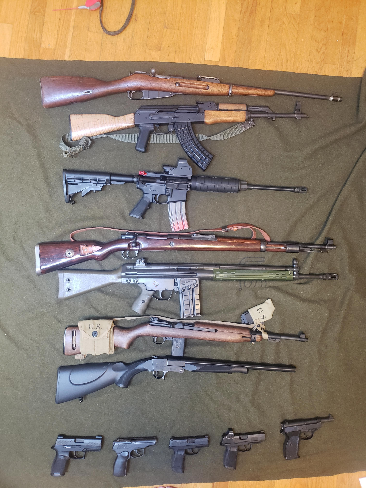
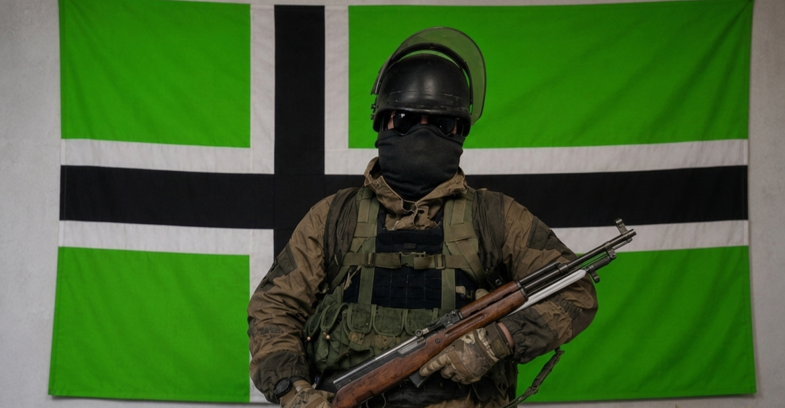
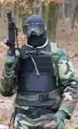

Military of the Jera Empire
The New Jera Military Model (2019–Present)
Reorganization of the Armed Forces
Following the underground period, during which the Empire experienced territorial fragmentation and political fluidity, the armed forces of the Jera Empire were reforged by decree of Emperor Jeremy Kloth and with the advisement of President Rose Carter.
These forces would also serve as the Empire's primary law-enforcement organization. They were modernized to provide both lethal and non-lethal capabilities for national defense.
The Military Police Force, commonly abbreviated as MPF, was established under President Rose Carter. Its organizational model emphasized emulation of the Metrocop and Combine security forces depicted in the Half-Life 2 fictional universe.
Following President Rose Carter's departure from the nation, Emperor Jeremy Kloth continued the development of the MPF. The organization incorporated military-surplus equipment, particularly Russian-designed equipment, alongside designs developed by the Jera Empire itself.
The Armaments
The Jera Empire maintains lethal, non-lethal, and ceremonial armament categories for military, law-enforcement, training, and cultural purposes.
Non-Lethal
Non-lethal equipment is primarily used for reducing the cost of war games and for simulated jurisdictional enforcement during exercises involving other micronations.
The Jera Empire employs the CYMA Sports Model 16A3 electropneumatic rifle as a non-lethal training and deterrence platform. It uses an electrically driven piston system and 6mm composite projectiles.
The system is doctrinally classified as a high-impact kinetic deterrent and is intended for controlled territorial-defense exercises without lethal penetration.
Ceremonial
For Jeran cultural events, receptions, and solemn military remembrance ceremonies, the Military Police Force utilizes the Gewehr 98k Ceremonial Rifle.
These bolt-action rifles are retained primarily for historical prestige and ceremonial appearance. They are designated as Jeran Protocol Volley Weapons and are used with non-lethal blank cartridges for traditional ceremonial salutes.
Lethal
The MPF Lethal Armaments Repository maintains a multi-tiered firearms inventory intended to support frontline defense, civil security, and state protocol.
Primary defensive capabilities include standardized rifle platforms utilizing intermediate-caliber ammunition, including the WASR 10-63 infantry rifle and Type 56 Carbine.
The MPF has also been observed fielding a modular DTI-15 direct-impingement platform as a potential replacement system under evaluation.
For territorial-defense operations, the Jera Empire also maintains heavier-caliber and long-range platforms, including the PTR-91 battle rifle. A smoothbore shotgun platform is also maintained for close-range defensive purposes.
The MPF sidearm inventory includes modern tactical platforms alongside auxiliary and legacy sidearms. These include the Sig Sauer P320, P365, CZ 82, Bulgarian Arsenal Makarov, and Walther P1.
Legacy bolt-action systems are maintained under a legal District Militia reserve policy. These include Karabiner 98k platforms, a modified Mosin-Nagant marksman platform, and Carcano rifle variants.
Citizen competition marksmanship training is separated from combat logistics through the use of a low-velocity M1-22 carbine training platform. Citizens may access the training system under state permission when using state property.

The Uniforms
Utilizing repurposed military surplus, the Military Police Force of the Jera Empire maintains a standardized appearance.
The foundational component of the service uniform is the Russian-designed Gorka suit, supplemented by standard-issue cold-weather face masks.
Headgear is mission-dependent, alternating between PASGT-style helmets and polycarbonate riot helmets according to operational requirements.
Tactical plate carriers are also mission-specific. When armored protection is required, personnel may use black commercial-grade 5.11 carriers.
Footwear is individually sourced by personnel but remains subject to regulations concerning style and utility.

Personnel and Rank Hierarchy
The Jera Empire's Military Police Force operates under a strict hierarchical structure designated by "Intention" tiers for enlisted personnel, leading to executive command ranks.
Operational privileges, armament authorization, and geographic autonomy scale according to a unit's rank.
| Abbreviation | Rank | Operational Authority & Parameters | Armament Authorization |
|---|---|---|---|
| Rct. | Recruit | Entry-level rank without a specialty designation. Placed under the direct authority of commissioned officers for mandatory instructional training. | Unarmed / Training Gear Only |
| i5 | Intention 5 | Initial operational tier. Authorized exclusively for guard and patrol duties and mandatorily paired with at least one unit of i4 rank or higher. | Strictly Non-Lethal |
| i4 | Intention 4 | Authorized for solo static guard duty exclusively within designated territorial district capitals. | Conditional Lethal (District Capitals Only) |
| i3 | Intention 3 | Authorized to establish and man checkpoints independently, provided personnel remain within visual range of a secondary unit or operate with a designated partner. | Full Lethal Access |
| i2 | Intention 2 | Granted geographic autonomy. Units may independently select and secure specific territorial sectors while maintaining continuous radio contact with command. | Full Lethal Access |
| i1 | Intention 1 | Authorized to initiate and conduct full tactical patrols alongside a partner unit. Granted direct, expedited communication lines to High Command for grievances. | Full Lethal Access |
| EpU | Elite Patrol Unit | Autonomous tactical rank operating with maximum individual discretion and accountability. Operates outside standard squad restrictions and is ranked as a peer to Squad Leaders without administrative personnel-management responsibilities. | Full Lethal Access |
| Abbreviation | Rank | Command Function & Administrative Responsibilities |
|---|---|---|
| SqL | Squad Leader | First tier of tactical command. Vested with autonomous promotion authority for subordinate units. Responsible for executing field orders passed down by commissioned officers. |
| OfC | Officer | Commissioned rank responsible for public event management and civil oversight. Vested with operational authority to independently initiate offensive actions against hostile forces. |
| CmD | Commander | Chief administrative officer of the MPF. Responsible for daily operations and internal dispute resolution. Acts as the functional proxy for the Sectoral Commander during absences. By constitutional tradition, this rank is reserved for the Vice President unless an alternative presidential appointment is made. |
| SeC | Sectoral Commander | Supreme Commander of the combined forces. Vested with authority to enact executive military orders. This rank is ex officio held by the President of the Jera Empire as Commander-in-Chief. |
District Militia Years (2010–2018)
The Jera Empire's military was trained in a militia-style format, beginning with practice using lesser weapons and progressing toward stronger weapons.
The primary benefit to the Empire in maintaining armed forces is providing protection from foreign threats and internal conflict. In recent wars, armed forces personnel have also been trained for emergency civil-support roles in post-disaster situations.
On the other hand, armed forces may also harm the Empire by engaging in counterproductive or unsuccessful warfare. Expenditure on science and technology to develop weapons and systems sometimes produces secondary benefits, although some argue that greater benefits could come from directing those resources toward the armed forces themselves.
The Jerapocalpse Empire had fought one war and was engaged in another. The Empire maintained a technological advantage over its opposition and continued to commit to maintaining a formal fighting force, including through emerging technologies such as Airsoft-RCs.
The Armaments
The District Militias maintained a standing inventory of non-lethal pneumatic armaments, primarily consisting of low-velocity foam- and gelatin-based projectile systems, for use in border-defense training and related activities.
The Uniforms
The Jera Empire sought to minimize costs by requiring soldiers to provide funds before enlistment for equipment and other gear. The required equipment was divided into affordability options.
Option One: Soldiers may wear a jacket in black, brown, green, or gray, together with standardized woodland-pattern pants. If a soldier wishes to use a protective vest, the soldier may purchase one at their own expense.
Option Two: Soldiers must wear a standardized woodland-pattern shirt and pants. If a soldier wishes to use a protective vest, the soldier may purchase one at their own expense.

Ranking System
The tactical organization of the District Militia relied on a non-executive ranking structure, divided into leadership, specialist, and standard troops.
Operational autonomy and strategic responsibility were invested within a decentralized, squad-based framework, allowing individual units to adapt dynamically without relying entirely on a centralized command structure.